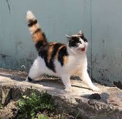

고양이 짤 성격 테스트

당신의 고양이는
"만찢냥 고양이"
입니다
이상 주의자에요. 그러나 감정 기복이 심하고 다른 사람한테 자신의 감정 상태를 솔직하게 다 나타내요. 혼자만 있는 거 진짜 좋아하는데 외로움을 많이 타요. 그리고 다른 사람들 일에 하나도 관심이 없고 또 그 사람들이 나를 어떻게 생각하는지도 하나도 관심이 없어요. 마지막으로 방이 많이 더러워요.